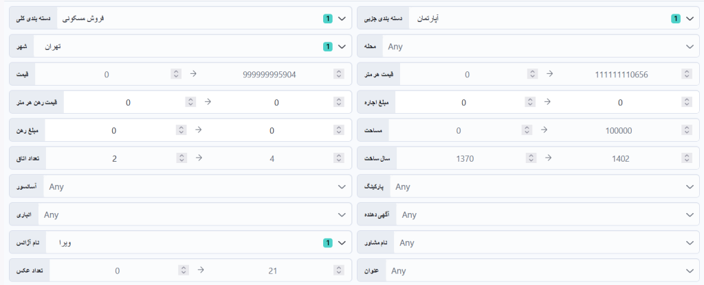
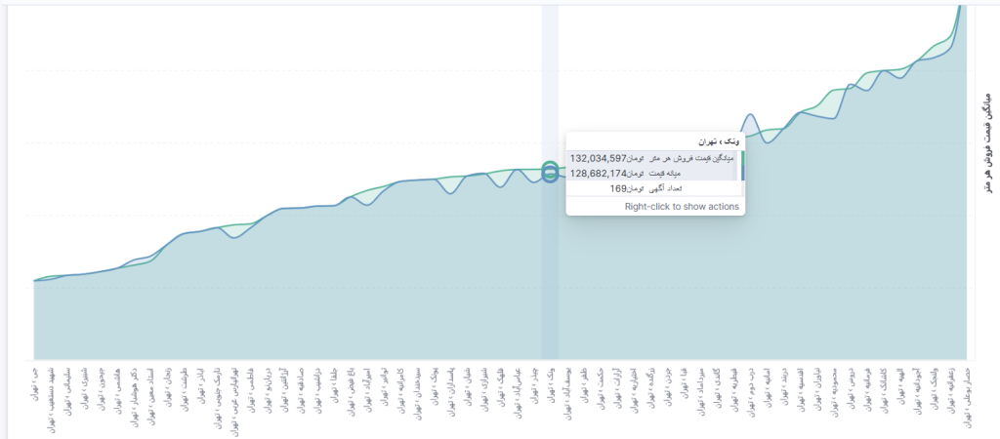
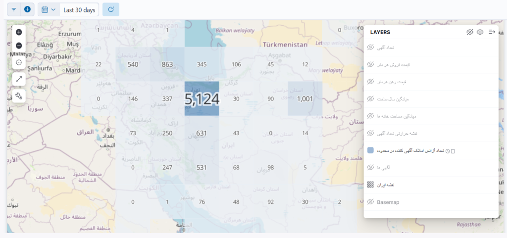
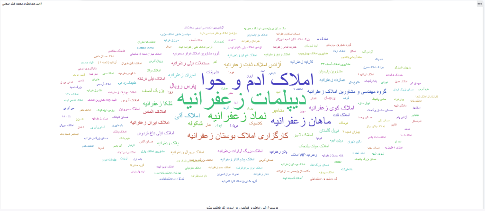
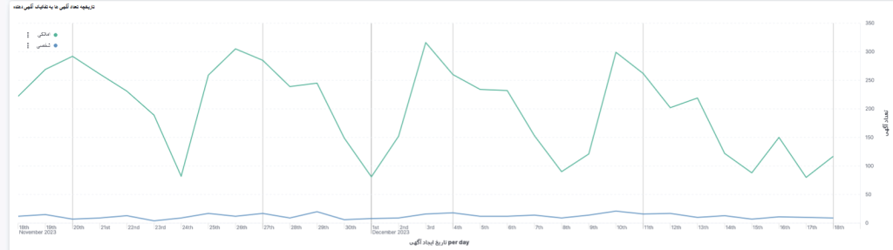
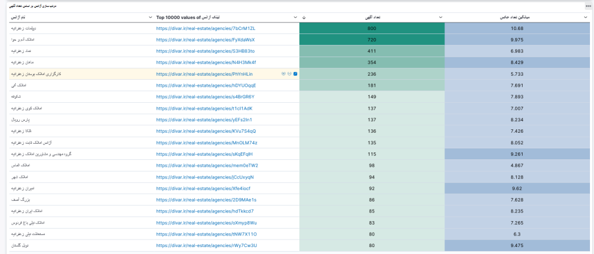
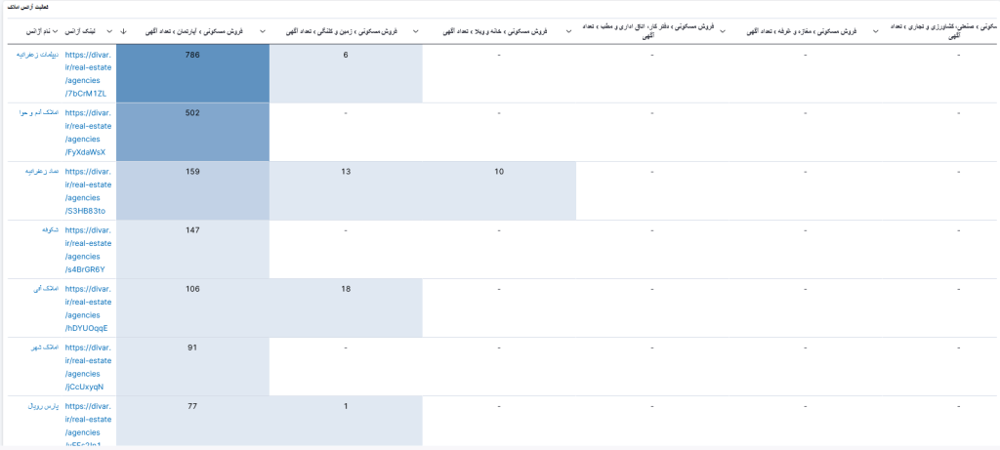
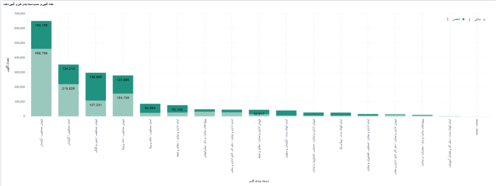
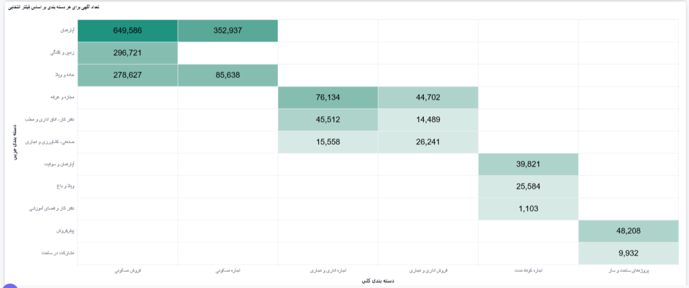
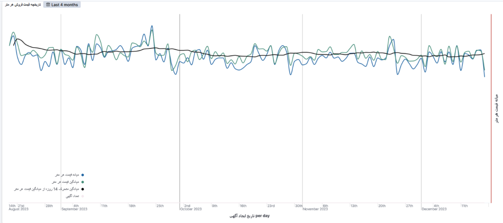

در این پست قصد دارم سایت الملک (almelk.com) رو که حاصل کار چند تا از دوستانم است، به شما معرفی کنم. امکانات این سایت هم برای افرادی که قصد معامله ملک دارند و هم برای مشاوران املاک که میخواهند با دادههای بهروز، اطلاعات املاک محدوده خود را پایش کنند، مناسب است. با ثبتنام در این سایت، یک روز فرصت دارید تا امکانات مختلف آن را آزمایش کنید. در ادامه، امکانات متنوع آن را شرح میدهم.
آمار و تحلیل لایت
توی این قسمت میتونید با ۲۰ فیلتر مختلف، املاک سراسر کشور را فیلتر کنید تا به ملک مورد نظر خود برسید. البته یک فیلتر هم برای زمان است که میتونید با اون بازه زمانی رو مشخص کنید؛ در مجموع ۲۱ فیلتر در اختیار دارید. در تصویر زیر میتونید این فیلترها را مشاهده کنید :

در بخش آمار و تحلیل لایت بعد از فیلتر کردن موارد دلخواه، میتونید نتایج زیر رو مشاهده کنید :
–تعداد آگهی های فیلتر شده
–تعداد آگهی های شخصی و املاکی (یعنی چند تا رو املاکی ها گذاشتند و چند تا رو یه شخص گذاشته)
-تعداد آگهی های عکس دار
-تعداد آگهی های نقشه دار (یعنی آگهی هایی که اطلاعات مختصات مکانی ملک روی نقشه وجود داره)
یکی دیگه از ویژگی هایی که این بخش داره نمودار میانگین قیمت در محله های مختلف رو نشون میده. مثلا توی تصویر زیر میتونید ببینید که کمترین قیمت برای محله جی و بیشتر قیمت برای حصار بوعلی و زعفرانیه است. یا مثلا تو محله ونک ۱۶۹ آگهی وجود داره که میانگین قیمت فروش هر متر تو این منطقه ۱۳۲ میلیون تومن و میانه قیمت ۱۲۸ میلیون تومنه. این اطلاعات بستگی به فیلتر هایی داره که انتخاب کردید. مثلا من فروش مسکونی رو انتخاب کردم. میتونید رهن یا اجاره رو هم انتخاب کنید.

تحلیل نقشهای
توی این قسمت همون ۲۰ تا فیلتر رو داریم، با این تفاوت که اطلاعات رو روی نقشه به شما نشون میده. یعنی میتونید نقشه حرارتی هر کدوم از موارد زیر رو مشاهده کنید :
-تعداد آگهی ها
-قیمت فروش هر متر
-قیمت رهن هر متر
-میانگین مساحت خانه ها
-تعداد آژانس املاکی آگهی دهنده
-میانگین سال ساخت
مثلا در تصویر زیر من تعداد آژانس های املاکی آگهی دهنده رو انتخاب کردم :

همونطور که در تصویر بالا مشاهده میکنید در تهران و مشهد بیشترین آژانس های املاکی، بیشترین تعداد تبلیغات رو گذاشتند. با زوم کردن روی هر قسمت از نقشه میتونید این اطلاعات رو در مورد محله های مختلف در سراسر کشور مشاهده کنید.
آمار آژانس املاک
تو این قسمت هم اون ۲۰ تا فیلتر رو داریم با این تفاوت که اطلاعات آژانس های املاکی در شهر و محله انتخابی رو نشون میده. در تصویر زیر ابر کلمات اسامی آژانس های املاکی زعفرانیه تهران رو میتونید مشاهده کنید. هر چی سایز فونت بزرگ باشه یعنی اون املاکی تعداد آگهی های بیشتری رو توی این محله گذاشته :

در تصویر زیر میتونید ببینید در طول یک ماه گذشته، املاکی های زعفرانیه چه تعداد آگهی رو قرار دادند :

اون قله ها در نمودار بالا به ترتیب برای تاریخ های ۲۹ آبان، ۵ آذر، ۱۲ آذر و ۱۹ آذر ۱۴۰۲ هستند.
در تصویر زیر هم میتونید جدول اطلاعات همین املاکی ها رو مشاهده کنید که ستون های این جدول عبارتند از :
-نام آژانس
-لینک آژانس
-تعداد آگهی
-میانگین تعداد عکس

یکی از قسمت های جذاب این بخش (آمار آژانس املاک) نمودار فعالیت املاکی هاست. یعنی نشون میده کدوم املاکی، چه تعداد آگهی در مورد فروش/اجاره/رهن ملک مسکونی/تجاری/اداری/زمین گذاشته. ستون هایی که داره عبارتند از :
-نام آژانس املاک
-لینک آژانس
-تعدا آگهی آپارتمان
-تعداد آگهی زمین و کلنگی
-تعداد آگهی خانه و ویلا
-تعداد آگهی دفتر کار و مطب
-تعداد آگهی مغازه و غرفه
-تعداد آگهی صنعتی، کشاورزی و تجاری

علاوه بر این، این جدول به تفکیک مشاور هم وجود داره. یعنی مثلا آقا یا خانم فلانی از آژانس املاکی فلان چند تا آگهی در کدوم بخش گذاشته. این اطلاعات میتونه برای املاکی ها خیلی کاربردی باشه.
آمار و تحلیل لایو جامع
در این بخش همون اطلاعات بخش های قبلی رو به صورت جامع با تنوع نمودار های بیشتر داریم. یعنی یک محله یا شهر رو جستجو میکنید و به صورت یکجا تمام اطلاعات رو به شما نمایش میده و نمودار های متنوع تری هم نسبت به بخش های قبلی داره که در نتیجه، میتونید یک تحلیل جامع از منطقه مورد نظرتون داشته باشید. نمودار هایی که در این بخش وجود داره عبارتند از :
-جدول مشخصات آگهی ها : همه اطلاعات آگهی نظیر عنوان، لینک، قیمت هر متر، مساحت، سال ساخت، تعداد اتاق و … وجود داره
-تعداد آگهی بر حسب دستهبندی کلی و آگهی دهنده : این نمودار نشون میده توی هر دسته بندی (فروش/اجاره/رهن ملک مسکونی/تجاری/اداری/زمین) چند تا آگهی رو شخص گذاشته و چند تا رو مشاور املاک. تو نمودار زیر سبز پررنگ تعداد آگهی های شخصی و سبز کمرنگ تعداد آگهی های مشاور املاک رو تو هر دسته بندی نشون میده.

-نمودار قیمت فروش و رهن هر متر : تو این بخش میانگین و میانه قیمت فروش و رهن هر متر رو در کل کشور یا محدوده مورد نظر شما نشون میده. مثلا کمترین قیمت فروش برای ایوان مشهد و بیشترین برای الهیه تهران بوده.
از این دیتا نمودار زیر هم وجود داره که به تفکیک نشون میده تو هر دسته بندی چه تعداد آگهی هایی وجود داشته :

-فعالیت مشاورین املاک : دقیقا اطلاعات بخش آمار آژانس املاک رو اینجا هم میتونید مشاهده کنید.
و کلی نمودار و نقشه دیگه که من به همین مواردی که تا الان گفتم اکتفا میکنم.
تاریخچه قیمت : توی این بخش تاریخچه چند ماهه تغییرات قیمت رو میتونید مشاهده کنید. مثلا نمودار زیر تاریخچه ۴ ماه گذشته قیمت هر متر ملک در زعفرانیه رو نشون میده :

جستجو و ثبت گوش به زنگ
یکی از مهم ترین ویژگی های این سایت گوش به زنگه. فرض کنید دنبال یه خونه با ویژگی های خاص هستید. میتونید توی این بخش یک آلارم تنظیم کنید که هر زمان که اون خونه با ویژگی های مورد نظر شما پیدا شد یک پیام در ربات تلگرام الملک برای شما ارسال بشه. هر ۵ دقیقه دیوار رو چک میکنه که اون مورد مد نظر شما رو پیدا کنه. این ویژگی هم برای آژانس های املاک میتونه جذاب باشه هم مشتری ها. املاکی ها میتونن تو منطقه خودشون گوش به زنگ تنظیم کنن و هر موقع خونه مورد نظر مشتری پیدا شد، بهشون اطلاع داده بشه.
nb.neighbours()
| title | date | |
|---|---|---|
| prev | نقشهٔ Dead Drop های جهان | ۱۴۰۲/۰۹ |
| next | از دوغ چیلی تا آبمیوهٔ گوجهفرنگی! | ۱۴۰۲/۱۰ |